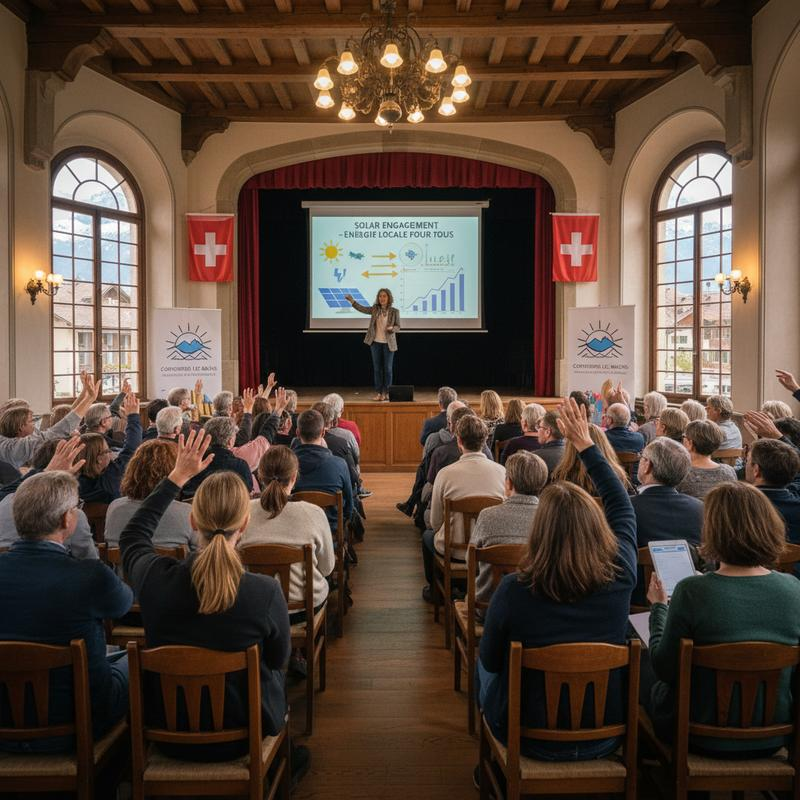
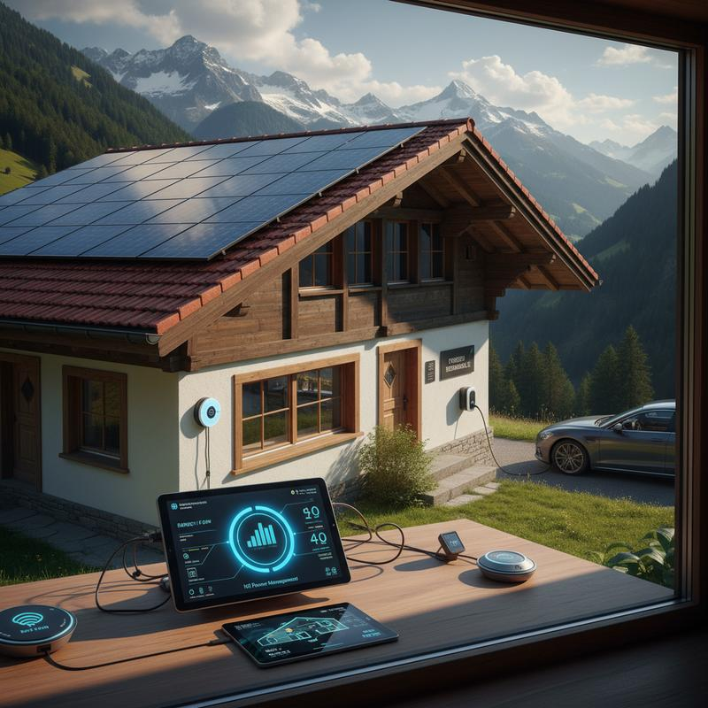
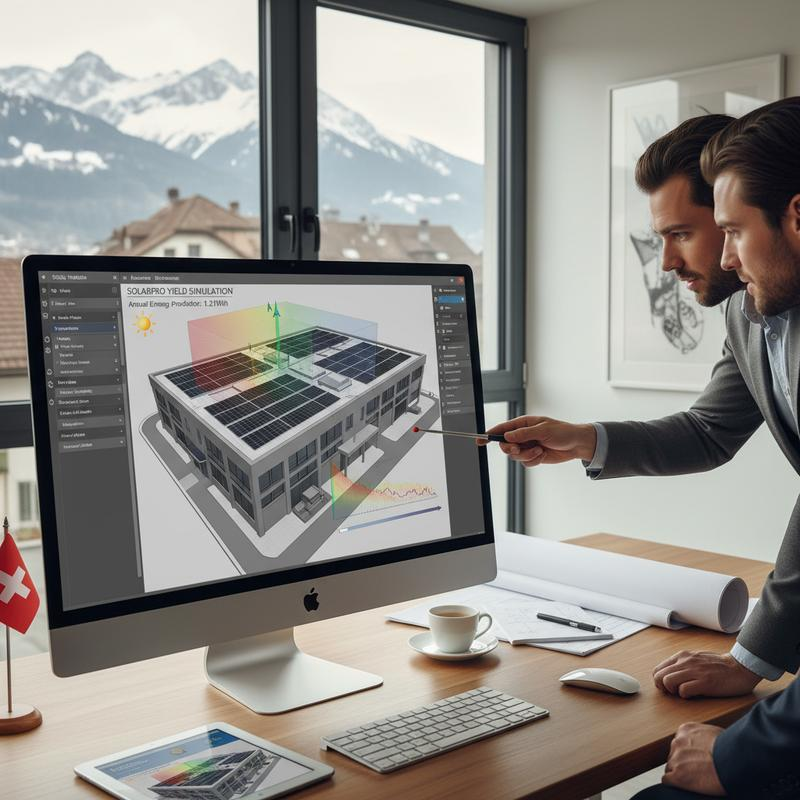
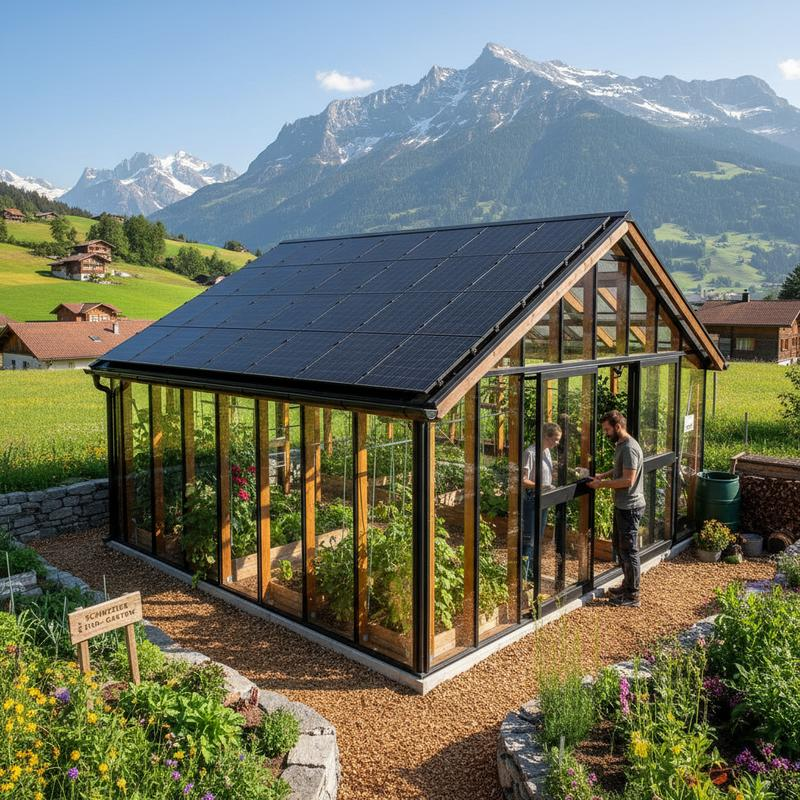
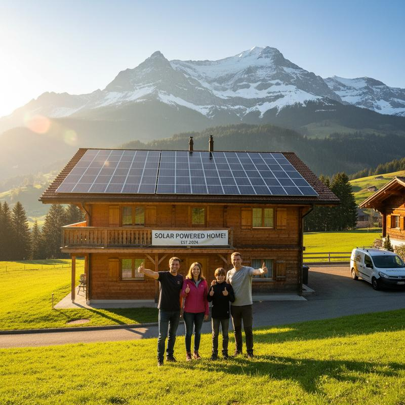

Einmalvergütung, kantonale Programme, Steuervorteile und Gemeinde-Förderung: Finden Sie heraus, wie viel Unterstützung Sie für Ihre Solaranlage erhalten.
Die Einmalvergütung des Bundes ist das wichtigste Förderinstrument für Solaranlagen in der Schweiz. Sie gilt für alle netzgekoppelten Photovoltaikanlagen ab 2 kWp.
| Anlage | Grund | kWp | Total |
|---|---|---|---|
| 2–5 kWp | 350 | 320 | 1'950 |
| 5–10 kWp | 350 | 320 | 3'550 |
| 10–30 kWp | 350 | 320 | 9'950 |
| 30–100 kWp | 350 | 320 | 32'350 |
| >100 kWp | Auktion | Variabel | |
Für Anlagen von 2 bis 100 kWp. Vereinfachtes Verfahren mit festen Tarifen. Anmeldung nach Inbetriebnahme über Pronovo. Bearbeitungszeit: 12–18 Monate.
Für Anlagen ab 100 kWp. Auktionsbasiertes Verfahren mit wettbewerblichen Ausschreibungen. Höhere Fördersätze möglich, aber komplexeres Antragsverfahren.
Mindestens 2 kWp Leistung, netzgekoppelt, fachgerechte Installation durch zertifizierten Installateur, Anmeldung bei Pronovo innerhalb von 3 Jahren nach Inbetriebnahme.
Zusätzlich zur Bundesförderung bieten alle 26 Kantone eigene Programme über das Gebäudeprogramm und weitere kantonale Fördertöpfe.
⚠ Angaben als Richtwerte für eine typische 10 kWp Anlage (Gebäudeprogramm + kantonale Zusatzförderung). Genaue Beträge variieren nach Programm und Gemeinde. [STAND: 2025 – bitte aktuell prüfen bei energiefranken.ch oder Ihrer kantonalen Energiefachstelle]. Angaben ohne Gewähr.
Kantonsdetails ansehen →Investitionen in Solaranlagen sind in der Schweiz grundsätzlich zu 100% steuerlich absetzbar – als werterhaltende Investition (Unterhaltskosten) bei der Einkommenssteuer. Hinweis: Steuerliche Details variieren je nach Kanton und persönlicher Situation. Keine Steuerberatung – konsultieren Sie Ihren Treuhänder.
Die gesamten Investitionskosten Ihrer Solaranlage können als Liegenschaftsunterhaltskosten vom steuerbaren Einkommen abgezogen werden. Dies gilt für Bund, Kanton und Gemeinde.
Vereinfachtes Beispiel. Tatsächliche Ersparnis abhängig von Kanton, Gemeinde und persönlicher Steuersituation.
Beispielrechnung für eine typische 10 kWp Photovoltaikanlage auf einem Einfamilienhaus im Kanton Zürich.
Investitionskosten: CHF 25'000 | Standort: Kanton Zürich | Grenzsteuersatz: 30%
Interessante Fakten rund um Solarförderung und Photovoltaik in der Schweiz.
Detaillierte Anleitungen und Ratgeber rund um Förderprogramme, Steuerabzüge und kantonale Subventionen.

Vollständige Anleitung zur Pronovo-Anmeldung mit allen Formularen, Fristen und Tipps.

Kantonale Förderung, Batterie-Bonus und Gemeindeprogramme im Detail.

Wie Sie die Kosten Ihrer PV-Anlage optimal steuerlich geltend machen.
Welche Kantone zahlen für Batteriespeicher und wie viel?

Heizungsersatz, Gebäudehülle, Solar: Alle Beiträge und Bedingungen.

Die häufigsten Fehler bei Förderanträgen und wie Sie diese umgehen.
Antworten auf die wichtigsten Fragen rund um Solarförderung in der Schweiz.
Nutzen Sie unseren Rechner und erfahren Sie, wie viel Unterstützung Sie in Ihrem Kanton erhalten.
Expertenwissen, praktische Tipps und aktuelle Informationen rund um Solarenergie in der Schweiz.